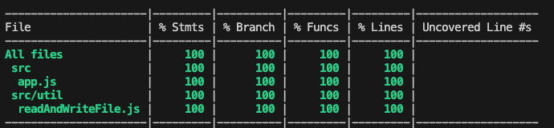
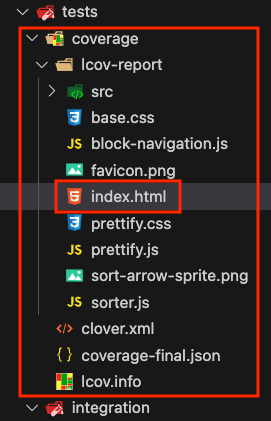
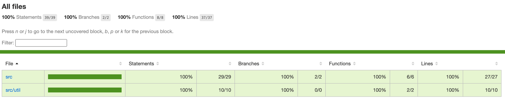

4.10 - Configurações do Jest
Agora que já temos um projeto pequeno com testes, vamos explorar algumas dicas que podem facilitar o desenvolvimento em projetos maiores. Em cenários assim, as configurações do Jest se tornam essenciais.
.only e .skip
Até o momento, ao rodarmos os testes, todos eles são executados. No entanto, podemos ter mais controle sobre isso com dois recursos: .only() e .skip().
.only()permite que apenas um teste ou um conjunto específico seja executado, ignorando os demais.
Você pode usá-lo tanto no describe() quanto no test(), como mostrado nos exemplos abaixo:
describe(): executa todos os testes dentro do blocodescribe()marcado com.only.
// Adiciona .only
describe.only('Usando o método GET em /chocolates/brand/:brandId para buscar brandId 1', () => {
test('Retorna os chocolates da marca Lindt & Sprungli', async () => {
// Lógica do teste
});
});
test(): executa apenas o teste marcado com.only, ignorando outros testes dentro dodescribe().
describe('Usando o método GET em /chocolates/:id', () => {
// Adiciona .only
test.only('Retorna o chocolate Mounds quando ID é 4', async () => {
// Lógica do teste
});
test('Retorna status 404 quando chocolate não encontrado', async () => {
// Lógica do teste
});
});
.skip()é o inverso de.only(), e serve para pular testes específicos, ignorando-os na execução. É utilizado da mesma forma que o.only.
jest.config.js
O jest.config.js é o arquivo que centraliza as configurações do Jest. Ele permite customizar o comportamento dos testes conforme as necessidades do projeto. Abaixo, vamos ver como criar esse arquivo e algumas configurações básicas:
// jest.config.js
/** @type {import('jest').Config} */
module.exports = {
rootDir: './tests',
testMatch: ['<rootDir>/integration/*.test.js'],
testTimeout: 10000,
testEnvironment: 'node',
};
/** @type {import('jest').Config} */: adiciona suporte a autocomplete e verificação de tipos no arquivo de configuração.rootDir: Define o diretório raiz para a execução dos testes, ajudando a padronizar o uso de caminhos relativos no projeto (O próximo comando considera essa configuração).testMatch: Especifica quais arquivos de teste devem ser executados. No exemplo, o Jest buscará por arquivos com a extensão.test.jsna pastaintegration.testTimeout: Permite ajustar o tempo máximo que o Jest deve aguardar para finalizar cada teste. O valor padrão é 5000ms (5 segundos), mas em testes mais complexos pode ser necessário aumentá-lo.testEnvironment: Define o ambiente de execução dos testes. Aqui configuramos para node, o que evita que o Jest tente acessar recursos do navegador, comodocumentouwindow, devido à configuração padrão.
Cobertura de Código (Coverage)
Cobertura de código é uma métrica que indica quais partes do código estão sendo testadas. Ela ajuda a identificar áreas que ainda precisam de mais testes, mas lembre-se: uma cobertura alta não garante que os testes sejam suficientes ou de alta qualidade.
Existem várias ferramentas para verificar a cobertura de código. Em termos gerais, esses resultados podem evidenciar:
- A proporção de linhas do código que é executada durante os testes;
- Se existem linhas que nunca serão executadas (como em condições mal estruturadas de
if/else); - A quantidade de funções externas que são chamadas;
- Blocos de código repetitivos e/ou inalcançáveis.
Para ativar a cobertura de código, adicione a configuração collectCoverage no arquivo jest.config.js:
// jest.config.js
// /** @type {import('jest').Config} */
// module.exports = {
// rootDir: './tests',
// testMatch: ['<rootDir>/integration/*.test.js'],
// testTimeout: 10000,
// testEnvironment: 'node',
collectCoverage: true,
// };
Depois de executar os testes novamente, uma tabela como a seguinte aparecerá no seu terminal

Teste Cobrindo 100% do Código!Sabendo que a imagem acima indica que estamos cobrindo 100% do nosso código com testes, vamos entender o que cada coluna significa:
| Termo | Descrição |
| File | Lista todos os arquivos da aplicação que estão sendo testados. |
| % Stmts | Abreviação de _statements_, indica a porcentagem de declarações testadas. |
| % Branch | Exibe a porcentagem de ramificações do código (como em condicionais `if/else`) que está sendo coberta pelos testes. |
| % Funcs | Exibe a porcentagem de funções que estão sendo testadas. |
| % Lines | Exibe a porcentagem de linhas cobertas pelos testes. |
| Uncovered Line #s | Exibe as linhas do arquivo que não estão sendo testadas. Caso a cobertura seja de 100%, essa coluna estará vazia. |
Além disso, ao rodar os testes será gerada uma pasta chamada coverage dentro da pasta de tests. Essa pasta contém diversas informações sobre a cobertura, incluindo um arquivo index.html que exibe os dados de maneira visual e interativa. Veja a imagem abaixo:

Para visualizar esse relatório interativo, você pode utilizar uma extensão como o Live Server no VS Code ou simplesmente arrastar o arquivo index.html para o seu navegador. Isso abrirá uma nova aba com o seguinte visual:

Agora é com você! Explore as funcionalidades no seu navegador para obter insights sobre sua cobertura de testes.
Anota aí 🖊: Não é uma boa prática enviar a pasta
coverageao seu repositório Git. Lembre-se de adicioná-la ao.gitignorepara que ela não seja incluída nos commits.
Configurações adicionais do Coverage
Vamos explorar mais algumas configurações para personalizar a geração da cobertura de código:
// jest.config.js
// /** @type {import('jest').Config} */
// module.exports = {
// rootDir: './tests',
// testMatch: ['<rootDir>/integration/*.test.js'],
// testTimeout: 10000,
// testEnvironment: 'node',
// collectCoverage: true,
coverageDirectory: '../novo-coverage',
coverageReporters: ['html', 'text'],
coveragePathIgnorePatterns: ['/node_modules/', '/tests/'],
coverageThreshold: {
global: {
branches: 80,
functions: 80,
lines: 80,
statements: 80,
},
},
// };
coverageDirectory: Define o local onde o Jest irá gerar o relatório de cobertura considerando o arquivorootDir(no nosso caso dentro da pastatests). Com esta opção também podemos escolher o nome do arquivo em que será gerado ocoverage(ex:novo-coverage).coverageReporters: Escolhe os formatos dos relatórios de cobertura gerados na pastacoveragee no terminal. No exemplo, teremos uma versão em HTML e outra em texto no terminal. O valor padrão inclui["clover", "json", "lcov", "text"].coveragePathIgnorePatterns: Exclui certos diretórios da análise de cobertura, comonode_modulese a própria pasta de testes.coverageThreshold: Estabelece metas mínimas para a cobertura de testes. No exemplo, configuramos uma cobertura mínima de 80% para ramificações, funções, linhas e declarações.
Para mais opções de configuração, consulte a documentação oficial do Jest.
OBS da IA
Alternativa mais moderna
- Com o runner nativo, a cobertura sai com
node --test --experimental-test-coverage. As opções de Jest mostradas na lição continuam válidas.
OBS da IA
CI/CD
- Com
coverageThresholdnojest.config.js, o Jest falha se a cobertura cair abaixo do mínimo, e o pipeline bloqueia o merge. - Cuidado com
.onlyesquecido: no pipeline, só aquele teste roda e o resto passa "verde" sem ter sido executado. Uma regra de lint (jest/no-focused-tests) evita isso. - Veja IA.2 - Preparando o projeto para a CI.
Minhas anotações
Atalhos: ← → navegar · Ctrl K ou / buscar